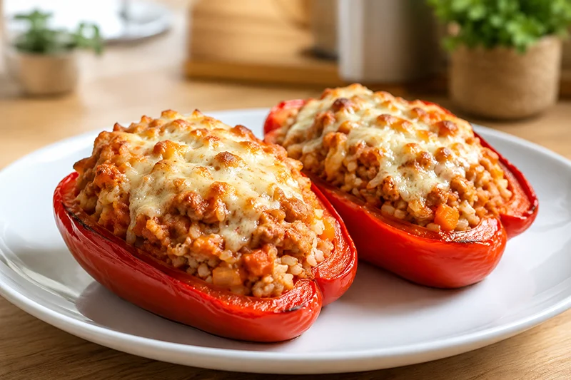

Receta saludable
Pimientos rellenos de carne y arroz
Los pimientos rellenos de carne y arroz son un plato completo que combina verduras, proteína magra y carbohidratos en una receta sencilla, sabrosa y perfecta para preparar con antelación.
Ingredientes
- 2 pimientos rojos grandes
- 300 g de carne picada de pollo o pavo
- 120 g de arroz
- 1 cebolla pequeña
- 1 zanahoria
- 2 dientes de ajo
- 150 g de tomate triturado
- 30 g de queso rallado ligero (opcional)
- 1 cucharada de aceite de oliva virgen extra
- Sal
- Pimienta negra
- Orégano
Preparación
- Cuece el arroz siguiendo las indicaciones del fabricante.
- Corta los pimientos por la mitad y retira las semillas.
- Sofríe la cebolla, la zanahoria y el ajo picados con el aceite de oliva.
- Añade la carne picada y cocina hasta que esté bien hecha.
- Incorpora el tomate triturado, el arroz cocido y el orégano. Mezcla bien.
- Rellena las mitades de pimiento con la preparación.
- Espolvorea un poco de queso rallado ligero si lo deseas.
- Hornea a 190 °C durante unos 25-30 minutos, hasta que los pimientos estén tiernos.
Consejo práctico
Puedes preparar el relleno el día anterior y conservarlo en la nevera. Así solo tendrás que rellenar los pimientos y hornearlos cuando vayas a consumirlos.